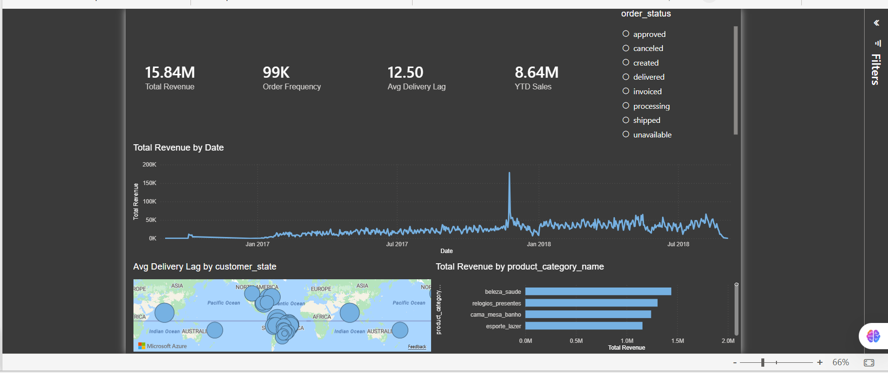
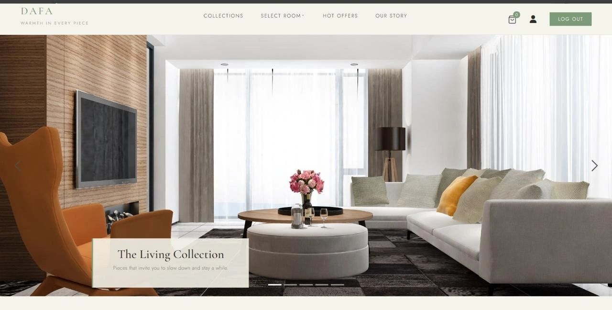
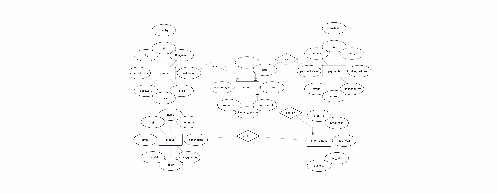
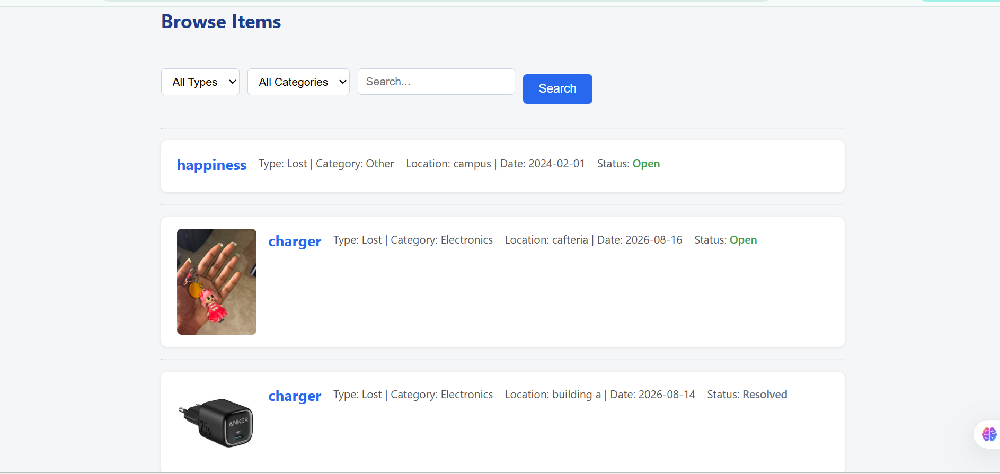
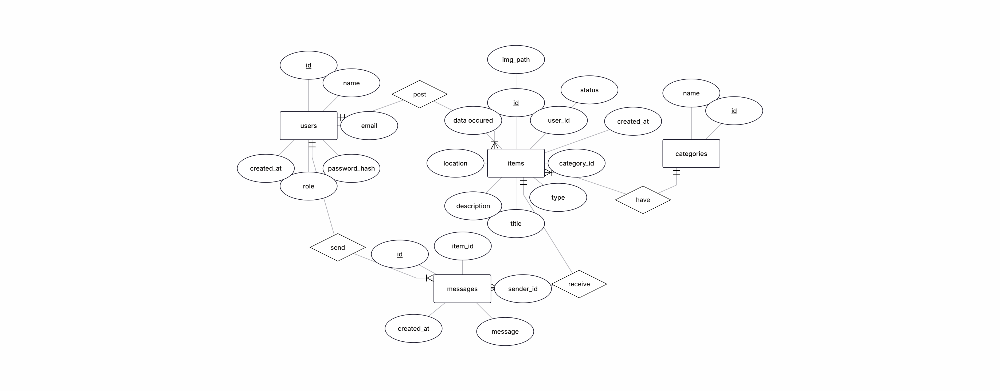

Five different data problems — ninety-nine thousand e-commerce orders, a furniture storefront built around a session-management bug, a university with no lost-and-found system, seventy-six student surveys, and a property group's consolidated statements. Each one starts the same way: pull the raw material apart until it says something a decision-maker can actually use, then check that the story survives contact with reality.
Delivery performance and early-warning risk across 99,441 Brazilian orders
Olist's public Brazilian e-commerce dataset is nine loosely-related tables of orders, payments, products, and reviews. The first job was structural: build a proper star schema in SQL Server — fact tables for orders and order items, dimension views for customers, products, and sellers — with delivery-lag and lateness calculations computed once, centrally, instead of re-derived in every query downstream.
With clean views in place, the analysis moved into Python for exploratory work. Delivery lag averages 12.5 days but is heavily right-skewed: about 5.2% of orders (5,025) take longer than 28.5 days, and those outliers aren't spread evenly across the country.
"The worst delays aren't everywhere — they're concentrated in five states, mostly Brazil's remote North."
Roraima, Amapá, Amazonas, Alagoas, and Pará post average lags between 23 and 29 days — nearly double the national figure. Delivery lag also correlates negatively with review score (r = −0.33): not the only driver of a bad review, but a meaningful one. From there, a logistic regression model was trained on information available before a package ships — payment value, freight cost, order size, customer state — and it correctly flags 51% of orders that go on to arrive late.
That 51% catch rate comes with a real trade-off: roughly 9 in 10 orders flagged as "risky" still arrive on time. It's a triage tool for cheap interventions — a courier nudge, a proactive customer update — not a certainty engine, and the write-up says so plainly rather than overselling the number.

A full pipeline in one project: a normalized SQL data model, exploratory analysis and predictive modeling in Python, and a Power BI dashboard built for a manager to actually check on a Monday — not just a notebook that ends at a chart.
A furniture storefront — and the session bug that taught the most
Dafa (دفا) is Arabic for warmth — the idea being furniture that brings warmth into a house, not just fills it. The storefront browses by room (Living, Bedroom, Dining), pulls live product data from MySQL into a custom-styled grid, and runs a session-based cart with full signup and sign-in.

The interesting part wasn't the product grid — it was what sits behind every page: a shared navigation bar with a live cart-count badge, present on every single route. Each room page originally opened its own PHP session independently before including that shared navbar, and those sessions started stepping on each other — cart counts resetting, "session already started" warnings, state that worked on one page and silently broke on the next.
"Every page was opening its own session and stepping on the navbar's — so the navbar needed to own exactly one."
The fix was architectural, not a patch: instead of every page independently managing session state before including the navbar, the navbar became the single place that owns the cart's session logic. Every page includes the same nav file, so there's exactly one code path that touches the cart session — no duplicate initialization, no race between two pages disagreeing about what's already open.
The schema underneath is built for a real transactional flow, not just a product catalog: customer, product, orders, order details, and payment, with foreign keys tying order line items back to both the order and the product, and payments back to the order. It's modeled the way a real store's checkout would need it, even where the front end is still catching up to the schema.

Signup passwords are hashed with password_hash() and inserted through parameterized queries — that flow was built the safe way from the start. Not every internal page reached the same bar yet; a couple of the admin report queries still build SQL with variables dropped straight in, since they were built fast to answer one specific question rather than to survive user input. Knowing exactly which parts of a codebase are hardened and which aren't is its own kind of useful.
A relational schema built for real transactions, a distinctive hand-built visual identity instead of default Bootstrap, and a debugging story about shared session state across includes — the kind of bug that only shows up once an app has more than one page talking to the same session.
A lost-and-found platform for the whole university, built from one embarrassing afternoon
My younger brother lost his charger in his first semester and asked me — a fourth-semester student who should've known the ropes — to help him find it. I couldn't. There was no lost-and-found system at the university worth mentioning: no board, no list, no way to check if someone had turned it in. Just word of mouth and bad luck. That was embarrassing enough to make me build one properly.
The result is a full lost-and-found platform: students register an account, post a lost or found item with a photo, and browse or search what everyone else has posted, filtered by type, category, or keyword. Anyone can look; only the item's original poster or an admin can mark it resolved, which keeps the board honest as items get claimed.
"Three chargers, reported lost within days of each other — proof this was never just about my brother's."
Under the hood it's a four-table relational schema — users, items, categories, and messages — designed before a line of PHP was written. Passwords are stored with PHP's password_hash(), never in plain text. Every database query runs through PDO prepared statements, so user input never gets concatenated directly into SQL. Image uploads are checked against a file-extension whitelist and a size cap before they ever touch the server's disk. And the "mark as resolved" action checks — server-side, not just hidden in the UI — that whoever clicked the button is either the item's original poster or an admin.
The messages table connects a sender to an item and its poster, laying the groundwork for in-app contact between whoever lost something and whoever found it — instead of leaking personal contact details to every visitor by default.


A real problem, not a tutorial clone: schema design, authentication, server-side authorization, and input validation, built solo end-to-end because a charger actually went missing.
A 76-respondent correlational study across AASTMT's campuses
Student satisfaction is the KPI every university claims to optimize for, but the literature disagrees on what actually drives it. This study tests four candidate variables — student expectations, academic services, campus infrastructure, and previous recommendations — against overall satisfaction, using a cross-sectional online survey of 76 students across AASTMT's branches, coded on a 5-point Likert scale and validated with Cronbach's alpha.
Every scale cleared the reliability bar, with campus infrastructure scoring highest (α = .896) — students were remarkably consistent in how they judged classrooms, facilities, and study spaces. That consistency showed up again in the correlation analysis.
"The one variable everyone expects to be secondary — the buildings — turned out to predict satisfaction the most."
All four predictors correlated positively with satisfaction, but not equally:
Correlational, cross-sectional design; minimal researcher interference; data collected once via Google Forms and distributed across AASTMT branches to capture both local and international students (59.7% international, 56.6% female, 67.1% aged 20–30). Each construct was tested for internal consistency before running Pearson correlations against total satisfaction.
The sample was distributed through personal networks, which risks selection bias toward similar viewpoints, and a single data-collection wave can't capture how satisfaction shifts across a student's years on campus — a longitudinal follow-up is the natural next step.
End-to-end quantitative research: literature review into testable hypotheses, survey design, reliability testing, correlation analysis, and an honest read of what the sample can and can't support.
Two fiscal years inside Talaat Moustafa Group's consolidated statements
Talaat Moustafa Group is one of Egypt's largest real-estate developers, and its consolidated statements read like most capital-intensive developers' do: heavy assets, long project cycles, and a financing model built on customer prepayments rather than bank debt. This project runs the full ratio toolkit — liquidity, leverage, efficiency, profitability, and market value — across two fiscal years to find out whether that model was getting stronger or weaker.
It was getting stronger. TMG's current and quick ratios stayed comfortably above 1 across both years, meaning the group could cover its short-term obligations without touching inventory. What moved was efficiency: receivables collection sped up and inventory turned over faster, which fed directly into a profit margin that nearly tripled — from 11.8% to 33.9% of revenue.
"The company grows by collecting from its buyers early — not by borrowing from its banks."
Total assets grew from roughly EGP 202 billion to EGP 357 billion, and equity nearly tripled from EGP 39 billion to EGP 131 billion over the same period. Return on assets doubled and return on equity climbed from 8.6% to 11%. The market noticed: TMG's share price moved from EGP 24 to EGP 74.70, while its price-to-earnings ratio held roughly steady near 16× — evidence that investors were pricing in real earnings growth, not speculation.
Ratios were built directly from TMG's published consolidated financial statements (FY2023–FY2024): short-term liquidity (current, quick, cash ratios, net working capital), long-term solvency (debt ratio, equity ratio, debt-to-equity, times interest earned, cash coverage), asset management (inventory and receivables turnover, total asset turnover), profitability (margin, ROA, ROE, DuPont decomposition), and market value (P/E, price-to-sales, price-to-book) — plus internal and sustainable growth rate modeling to estimate how fast TMG can expand using only its own retained earnings.
This is the full ratio-analysis toolkit applied to a real, messy, multi-billion-pound balance sheet — not a textbook example. It demonstrates reading financial statements for a story, not just plugging numbers into formulas.